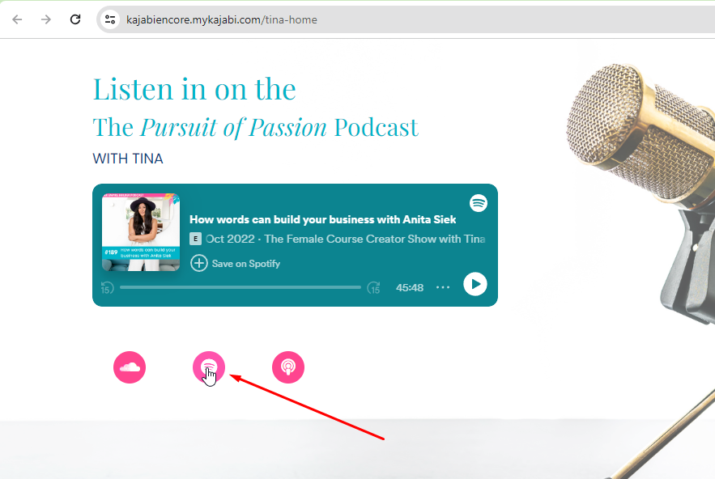

Вітаю!
Мене звати Віталій, я маю спеціальність Frontend developer тому зазначені нижче покращеня і зауваження зроблені виходячи із досвіду і знань. Задля прикладу вмінь та навичок зробив відповідь у вигляді розмітки. Швидко навчаюсь, дуже мотивований, відповідальнний і добре комунікую з людьми.
Нажаль ще не маю комерційного досвіду тому готовий працювати за символічну винагороду для саморозвитку та створення спільних крутих проєктів.
Аналіз веб-сайту Kajabi
-
Блок із класом "block box-shadow-none background-light aos-init aos-animate" випадає за межі контейнеру, що може ламати загальний вигляд надалі.
-
Блок dropdown логічно зробити за допомогою тега nav, в ньому список ul, а всі його items зробити li-шками. Це надасть певного пріорітету для пошукової машини.
-
При наведенні на кнопку варто додати зміну кольору або scale чи іншу дію для звернення уваги користувача.
Жовта полоса у фото бекграунда вводить в оману бо виглядає як aside -
Логотип за замовчуванням має прозорість а при наведенні стає ще більш прозорим. Виглядає не логічно. Варто або за замовчуванням зробити не прозорим або при ховері.
-
В блоці card елемент card__image варто виконати за допомогою h3, це знизить затрату ресурсів на завантаження img.
Також юзеру не логічно виглядає що ці статичні елементи card__image мають однаковий дизайн із клікабельною кнопкою join us. Їх варто розрізнити. -
На мою субєктивну думку секціям варто присвоювати логічні назви а не просто (21613854131). В блоці kind words контент випадає за межі контейнеру. В наступному блоці також задіяний контейнер хоча він тут є зайвим, бо елементи розташовані поза його межами.
-

В блоці social-icons__icons при наведенні варто додати вспливаючу підказку, бо не одразу зрозуміло що це за посилання.
-
Після вводу пошти і завантаженні іде пересилання на іншу сторінку. Користувачу ліпше лишатися на цій же. Додати попап що все пройшло вдало.
-
У мобільній версії зникає футер, відповідно треба відобразити.
-
Під час відкриття навігації весь сайт зміщюється вниз, це велике навантаження. Варто відкривати меню поверх інших блоків.
Також додати закривання меню при кліку поза межами меню. (зараз закривається лише хрестиком)